作成日：2025/06/21 12:32:06
更新日：2026/01/25 09:24:36
トップページ
はじめに
OCI 2025 Networking
Professionalを受験しました。予想どおりに鬼ムズでした。
ここにも情報をまとめていましたが、試験ではここに書いてない情報がバンバン出題されていました。
(公開されている演習動画やウェブ情報を見ただけでは合格は難しいです)
ここに書いてある情報は引き続き加筆修正して、網羅性をあげていきたいです。
OCI資格情報(OCI-NP-2025)
分類01:OCI資格概要
資格名(2025)
- 1Z0-1124-25
- Oracle Cloud Infrastructure 2025 Networking Professional
Oracle社公式サイト
試験内容チェックリスト
- OCI仮想クラウド・ネットワーク (VCN) の設計とデプロイ
- VCN/サブネットの特性の確認
- IPv4/IPv6 アドレス指定の理解
- VCN ゲートウェイの役割の区別
- 異なるエンドポイントの認識
- ネットワーキング・アーキテクチャへのエンドポイントの適用
- オブジェクト・ストレージ・エンド・ポイント(Keeperの配置)
- OCI
ネットワーキング・ソリューションとアプリケーション・サービスの計画と設計
- IP管理の詳細を認識し、手順ステップを選択
- OCI
ロード・バランサのオファリングおよび関連リソースについての理解
- OCI DNS およびトラフィック・ステアリングの理解
- DNSsec (Keeperの配置)
- ハイブリッド・ネットワーキング・アーキテクチャの設計
- DRG と DRG アタッチメントのコマンドの理解
- BGP の知識の評価
- OCI VPN サービスの評価
- OCI の異なる FastConnect 製品のノウハウの検証
- マルチクラウド接続構成の維持
- FastConnect に対する IPSec
- 転送ルーティング
- DRG、LPG、Network Appliance
リソースによる転送ルーティングに関する重要な側面の解釈
- 転送ルーティング構成の合成
- 安全な OCI ネットワーキングと接続ソリューションの実装と運用
- 接続および関連する IAM の概念をテナンシ間通信に適用
- 複数層アーキテクチャでの要塞サービスの様々なアプローチの理解
- CloudShell の機能の理解
- ネットワーク・ファイアウォールの特性の理解
- ネットワーキング多層アーキテクチャにおける
WAF/エッジ/証明書/サービスの評価
- ネットワーキング多層アーキテクチャにおける IaC/OKE
サービスの解釈
- Zero Trust Packet ルーティング
- 試験内容チェックリスト
試験コース
- 試験コース
- 01:OCI(OCI-NP)資格概要
- 02:OCI概要
- 03:OCI仮想クラウド・ネットワーク(VCN)の設計と導入
- 04:VCNゲートウェイ
- 05:OCIネットワーク・ソリューションとアプリケーション・サービスの計画・設計
- 06:ハイブリッド・ネットワーク・アーキテクチャの設計
- 07:転送ルーティング
- 08:セキュアなOCIネットワークと接続ソリューションの実装と運用
- 09:OCIへのワークロードの移行
- 10:OCIネットワーク、接続性、トラブルシューティング・ツール
- 11:OCIネットワークのベスト・プラクティス
- 99:ネットワーク一般技術
関連サイト
資格情報(OCI-NP-2024)
分類01:OCI(OCI-NP)資格概要
資格名(2024)
- 1Z0-1124-24
- Oracle Cloud Infrastructure 2024 Networking Professional
Oracle社公式サイト(2024年)
関連サイト
OCI参考資料
分類02:OCI概要
Oracle Cloud
Infrastructure 活用資料集
Oracle Cloud
Infrastructure チュートリアル
Oracleアーキテクチャ・センター
Qiita情報
分類02:OCI概要
Qiita情報
- Oracle Cloud Infrastructure Architect Associate 勉強メモ
- AWS/Azure 経験者がはじめる OCI 入門
- manaki(愛希)
- オラクル・クラウドの個人ブログ
- Oracle Cloud Infrastructureの運用監視・セキュリティサービスまとめ
OCI概要
分類02:OCI概要
OCI全体概要
OCI構成
レルム
IAM
OCIモニタリング機能
コスト管理
OCIネットワーク概要
分類03:OCI仮想クラウド・ネットワーク(VCN)の設計と導入
OCIネットワーク概要
VCN概要
分類03:OCI仮想クラウド・ネットワーク(VCN)の設計と導入
Virtual Cloud
Network(VCN)概要
- VCNの概要
- 仮想的なOCIアカウント（テナンシ）毎のプライベートネットワーク。この中にOCIの環境を構築していく。
- 単一リージョンに存在する。（可用性ドメインは跨ぐことができる）
- コンパートメントは概念だからリージョンを跨げるけど、VCNはネットワークの範囲なのでリージョンは跨げないイメージ
- 重複しないCIDRブロックを１つ以上持つことができる。（最大５個）
- CIDRブロックは後から変更（追加・拡大・縮小・削除）可能。
- 別リージョンではCIDRブロックが重複しても作成することはできるが、DRGを用いたピアリングができなくなる。
- VCNsおよびサブネット
- VCNの概要
VCN構成要素
- Virtual Cloud Networkに含まれるコンポーネント
- Virtual Cloud Network(VCN)
- OracleCloud上で定義したSoftwareDefinedNetwork(SDN)
- VCNに複数のサブネットを定義する
- サブネット(Subnet)
- 仮想ネットワークインターフェース・カード(VNIC)
- ルート表(Route Table)
- パブリックIP(Public IP)
- プライベートIP(Private IP)
- セキュリティ・リスト(SL:Security List)
- ネットワーク・セキュリティ・グループ(NSG)
- DHCPオプション
- DNSリゾルバ(Internet and VCN Resolver)
- インターネット・リゾルバ
- インスタンスによって、インターネットで公開されているホスト名が解決されます。
- インスタンスは、インターネット・ゲートウェイまたはオンプレミス・ネットワークへの接続(DRGを介したサイト間VPN
IPSec接続など)を介してインターネットにアクセスする必要はありません。
- VCN Resolver
- VCN内部のInstanceを名前解決するためのリゾルバ
- ゲートウェイ
- インターネットゲートウェイ
- NATゲートウェイ
- サービスゲートウェイ
- プライベート・エンドポイント
- ダイナミック・ルーティング・ゲートウェイ(DRG)
- ローカル・ピアリング・ゲートウェイ(LPG)
- 同一リージョンに存在するVPNを接続するために使用する仮想ルータ
- 別リージョンに存在するVCNと接続する場合は、DRGを使用して、Remote VPN
Peeringを行う
- ネットワーキング・コンポーネント
- Oracle
Cloud 仮想ネットワークに含まれるコンポーネントメモ
サブネット
サブネット種別
OCIのサブネットには、AD固有（Availability
Domain固有）とリージョナル（リージョン全体）の2つのタイプがあります。
AD固有サブネットは、特定の可用性ドメイン（AD）にのみリソースを配置できますが、リージョナルサブネットは、リージョン内のすべてのADにリソースを配置できます。
どちらを選ぶかは、冗長性や可用性の要件によって決まります。
- AD固有サブネット
- 特徴:ある特定の可用性ドメイン（AD）にのみリソースを作成できます。
- 利点:単一AD障害への耐性を高めることができます。
高可用性（HA）構成において、リソースを複数のADに分散させる際に役立ちます。
- 利用シーン:特定のADに配置したいリソースがある場合。
障害発生時にも、他のADでサービスを継続させたい場合。
- リージョナルサブネット
- 特徴:物理的なアベイラビリティドメイン（AD）の境界を越えて、リージョン内のどのADにもリソースを配置できます。
- 利点:ADに依存せずにリソースを配置できるため、インフラストラクチャの管理が簡素化されます。冗長性の確保が容易になります。
- 利用シーン:リージョン全体で利用できる共有サービス（例:
ロードバランサー）を配置する場合。
リージョン全体に展開するアプリケーションのコンポーネントを配置する場合。
- リージョナル・サブネットについて
仮想ネットワークインターフェース・カード(VNIC)
VNICはサブネットに存在し、そのサブネットが属するVCNに関連付けられます。
VNICに対してセキュリティ・ルールが設定されることで、コンピュート・インスタンスがVCNの内外のエンドポイントに接続できるようにします。
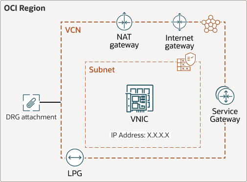
VCNルート表
分類03:OCI仮想クラウド・ネットワーク(VCN)の設計と導入
VCNルート表/概要
VCNルート表/VCNルート表の作成
ルート・ルールを定義して、VCNルート表を作成する。
- ルート・ルール
- ターゲット・タイプ: ターゲット・タイプを設定します。
ターゲット・タイプがDRGの場合は、VCNのアタッチされているDRGがターゲットとして自動的に選択されます。
ターゲットがプライベートIPオブジェクトの場合、ターゲットを指定する前に、そのプライベートIPオブジェクトを使用するVNICでソース/宛先チェックを無効にする必要があります。
- ターゲット: ターゲットを指定します。
ターゲットがプライベートIPオブジェクトの場合、そのOCIDを入力します。または、プライベートIPアドレス自体を入力することもできます。入力すると、コンソールによって、対応するOCIDが検索され、それがルート・ルールのターゲットとして使用されます。
- 宛先CIDRブロック:
ターゲットがサービス・ゲートウェイでない場合にのみ使用できます。
値は、トラフィックの宛先CIDRブロックです。
特定の宛先CIDRブロックを指定できます。または、サブネットを退出するすべてのトラフィックをこのルールで指定されたターゲットにルーティングする必要がある場合は、0.0.0.0/0を使用できます。
- 宛先サービス:ターゲットがサービス・ゲートウェイである場合のみ使用できます。
値は、宛先の「サービスCIDRラベル」です。
- コンパートメント:ターゲットが所属するコンパートメントを指定します。
- 説明: ルールのオプションの説明。
- VCNルート表の作成
- ルート表とルート・ルールの作業
- ルート・ターゲットとしてのプライベートIPの使用
- ルート表
- ルート表
VCNルート表/VCNルート表で指定が可能なターゲット・タイプ
ルート・ルールで許可されるターゲット・タイプは次のとおりです。
- ターゲット・タイプ
- Dynamic Routing Gateway (DRG)
- インターネット・ゲートウェイ
- NATゲートウェイ
- サービス・ゲートウェイ
- ローカル・ピアリング・ゲートウェイ(LPG)
- プライベートIP
パブリックIPアドレス
分類03:OCI仮想クラウド・ネットワーク(VCN)の設計と導入
パブリックIPアドレス/概要
IPアドレス持ち込み（BYOIP：Bring
Your Oun IP Address)
Oracle Cloud
Infrastructureでは、Oracleが所有するアドレスを使用することに加えて、IPの持ち込み(BYOIP)によるアドレス空間をOracle
Cloud Infrastructureのリソースで使用できます。
- BYOIPプロセスの概要
- Oracle Cloud
InfrastructureのBYOIPに必要なステップにはかなりの時間かかるため、それに応じた計画を立てます。
- BYOASN
- Bring Your Own ASN
(BYOASN)を介してインポートされた独自のASNを使用してIPプリフィクスをアドバタイズする場合は、Oracle
ASN
(31898)および独自のASNを使用して、RIRを使用してルート・オリジン認可(ROA)を作成する必要があります。
- IPの持込み
- IPアドレス持ち込み
OCI-IPv6
分類03:OCI仮想クラウド・ネットワーク(VCN)の設計と導入
IPv6/概要
セキュリティ・リスト(SL)・ネットワーク・セキュリティ・グループ(NSG)
分類03:OCI仮想クラウド・ネットワーク(VCN)の設計と導入
セキュリティ・リストとネットワーク・セキュリティ・グループ/概要
ネットワーキング・サービスには、パケット・レベルでトラフィックを制御するためにセキュリティ・ルールを使用する2つの仮想ファイアウォール機能が用意されています。
セキュリティ・リストとネットワーク・セキュリティ・グループ/セキュリティ・ルールの構成要素
- SL/NSGの構成要素
- 方向(イングレスまたはエグレス)
- ステートフルまたはステートレス
- 送信元タイプおよび送信元(イングレス・ルールのみ)
- 送信元ポート
- 宛先タイプおよび宛先(エグレス・ルールのみ)
- 宛先ポート
- IPプロトコル
- ICMPタイプおよびコード
- セキュリティ・ルールの構成要素
セキュリティ・リストとネットワーク・セキュリティ・グループ/設定例
設定例は以下のとおり
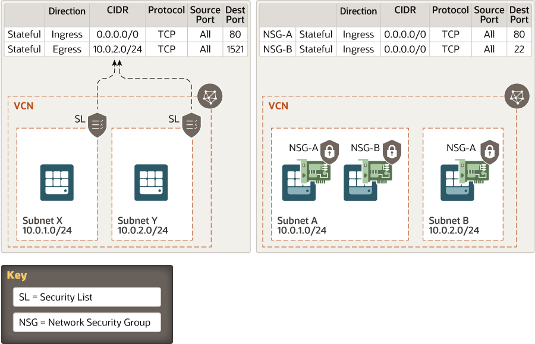
- 図の説明
- セキュリティ・リスト
- 「0.0.0.0/0(全許可)」「ポート80」を宛先とするイングレス(受信パケット)は全て許可する
- 「10.0.2.0/24」「ポート1521」を宛先とするエグレス(送信パケット)を許可する
- ネットワーク・セキュリティ・グループ
- 「0.0.0.0/0(全許可)」「ポート80」を宛先とするイングレス(受信パケット)は全て許可する
- 「0.0.0.0/0(全許可)」「ポート22」を宛先とするイングレス(受信パケット)は全て許可する
機能の違い
セキュリティ・リスト(SL)はサブネットに関連付け、そのサブネットに含まれるすべてのVNICに同じルールを適用します。
ネットワーク・セキュリティ・グループ(NSG)はVNICごとに適用できるため、同じサブネット内のVNICに対して異なるセキュリティ・ルールを適用することができます。
また、どちらも許可のルールのみで拒否のルールを指定することはできません。
(機能の違い)
| 項目 |
セキュリティリスト |
ネットワークセキュリティグループ |
| 割当先 |
サブネット
(サブネット内のすべてのVNIC) |
VNIC(コンピュートインスタンス)
サービスリソース |
| 有効化手順 |
セキュリティ・リストとサブネットの関連付け |
NSGへの特定のVNICの追加 |
| ステートレス・ステートフル |
選択可能 |
選択可能 |
| 制限事項 |
サブネット当たり最大5つのセキュリティ・リスト |
VNIC当たり最大5つのNSG |
同時設定した場合の挙動
セキュリティ・リストとネットワーク・セキュリティ・グループの設定は、「OR(又は)」となる。
片方で許可していなくても、どちらかで許可ルールを設定されていればトラフィックは通過可能である。
セキュリティ・リスト
ネットワーク・セキュリティ・グループ
セキュリティ・ルール/ステートフルルールとステートレスルール
セキュリティ・ルールを作成する際には、ステートフルとステートレスのどちらかを選択します。デフォルトはステートフルです。
インターネットに接続するWebサイト(HTTP/HTTPSトラフィック用)が大量に存在する場合は、ステートレス・ルールが推奨されています。
VCN間NW接続
分類04:VCNゲートウェイ
VCN間NW接続/外部からOCIへの接続方式
外部からOCIへの接続方式には、以下の3つの方式がある。
- 外部からOCIへの接続方式
- パブリック・インターネット
- グローバルIP通信
- FWとSSL通信等によりセキュリティ確保
- 通信速度・帯域はベストエフォート
- 外部へのデータ転送が月10TBを超える場合には課金対象
- VPN接続(IPsec)
- プライベートIP通信
- IPsecによりセキュリティ確保(認証、暗号化)
- 通信速度・帯域はベストエフォート
- VPN接続は無料、インターネット通信料金は課金対象
- Fast Connect
- プライベートIP通信/グローバルIP通信
- プライベート回線による高いセキュリティ
- 通信キャリアによる速度、帯域、品質を保証
- 固定額のポート領域のみ課金、データ転送による従量課金なし、専用回線費用は課金
- VCNと外部との接続のオプション
- OCI技術資料
: 外部接続 VPN接続 詳細/2ページ
ネットワーキング・シナリオ
ゲートウェイ/概要
分類04:VCNゲートウェイ
ゲートウェイ一覧
各接続ごとに利用するゲートウェイ
NATゲートウェイ
分類04:VCNゲートウェイ
NATゲートウェイ/概要
サービス・ゲートウェイ
分類04:VCNゲートウェイ
Oracle Services Network(OSN)
Oracle Services Networkは、Oracleサービス用に予約されているOracle
Cloud Infrastructureの概念的なネットワークです。
これらのサービスには、通常はインターネットを介してアクセスするパブリックIPアドレスがあります。
サービス・ゲートウェイは、VCNおよびオンプレミス・ネットワークのワークロードからOracle
Services Networkへのプライベート・アクセスを提供します。
- Oracleサービスへのアクセス方法
- オンプレミス・ネットワーク内のホスト:
- FastConnectプライベート・ピアリングまたはサイト間VPNを使用した、VCNを経由するプライベート・アクセス:
オンプレミス・ホストはプライベートIPアドレスを使用し、VCNおよびVCNのサービス・ゲートウェイを経由してOracle
Services Networkに到達します。
- FastConnectパブリック・ピアリングを使用したパブリック・アクセス:
オンプレミス・ホストはパブリックIPアドレスを使用します。
- VCN内のホスト:
- サービス・ゲートウェイを介するプライベート・アクセス:
これがこのトピックで説明するシナリオです。VCNのホストはプライベートIPアドレスを使用します。
- Oracleサービスへのアクセス:
サービス・ゲートウェイ
- サービスゲートウェイでサポートされているクラウド・サービス
- Oracle
Services Networkとは？
サービスCIDRラベル
公開されたアドレスは、All Services in Oracle Services
NetworkというサービスCIDRラベルに対応します。
プライベート・エンドポイント
分類04:VCNゲートウェイ
プライベート・エンドポイント/概要
プライベート・エンドポイントのネットワーク構成
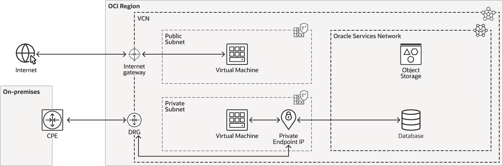
プライベート・エンドポイントとサービス・ゲートウェイの違い
(機能の違い)
| 項目 |
プライベート・エンドポイント |
サービス・ゲートウェイ |
| 適用されるサービス |
単一サービスへの選択的なアクセスを提供します
Autonomous Data
Warehouseでは、選択したサブネットの一つのプライベートIPアドレスを保持します |
複数のサービスへのアクセスを提供します |
| アクセス方向 |
順方向、逆方向ともに(双方向、両方向)接続が可能 |
順方向(VCN→OSN)のみの接続が可能 |
オブジェクト・ストレージの専用エンドポイント
分類04:VCNゲートウェイ
オブジェクト・ストレージの専用エンドポイント/概要
URLに専用のネームスペース文字列を含めることで、テナンシ固有のエンドポイントが設定可能となります。
テナンシーごとで分離された状態でオブジェクト・ストレージを利用することができます。
オブジェクト・ストレージの専用エンドポイント/接続先URL
接続先は以下となります。
https://$namespace.objectstorage.$region.oci.customeroci.com
ローカルピアリング接続(LPC)
分類04:VCNゲートウェイ
ローカルピアリング接続
Virtual Cloud
Network(VCN)は、VCNピアリングを使用することで各VCNは他のVCNに直接アクセスすることが可能となります。
ピアID(Peer ID)
- ピアID(Peer ID)
- ピアIDは、リクエスト側テナンシーによって作成されたRPCのOCIDです。
- これによりRPCが一意に識別され、受け入れ側テナンシーは適切なピアリングをターゲットとして確立できます。
- 別のLPGへの接続
ローカルピアリングゲートウェイ(LPG)
同じリージョン内の2つのVCNを接続し、プライベートIPアドレスを使用して通信できることです。
ローカルピアリング接続のIAM設定
OCI-LB
分類05:OCIネットワーク・ソリューションとアプリケーション・サービスの計画・設計
OCI-LB/概要
OCI-LB/種別
- フレキシブル・ロード・バランサ(FLB)
- プロキシ型
- 高度なバランシング機能
- パブリックFLB、プライベートFLBの構成が可能
- 様々なプロトコル（HTTP, TCP, WebSocket）に対応
- HTTP（レイヤー7）/TCP（レイヤー4）のトラフィックに対応
- セッションパーシステンスに対応
- ネットワーク・ロード・バランサ(NLB)
- パススルー型
- 低レイテンシーに適したロードバランサ
- パブリックNLB、プライベートNLBの構成が可能
- レイヤー4/レイヤー3のトラフィックに対応
- 帯域幅を制限しないでスケールアップ・スケールダウン可能
- ロード・バランサとネットワーク・ロード・バランサの比較
- OCI
ロードバランサとOCI NLBの比較
フレキシブル・ロードバランサ（FLB）
FLBの仕様
- FLBのロードバランシングポリシー
- ラウンドロビン
- バックエンド・セット・リストの各サーバーに順番にルーティングされる
- デフォルトのロード・バランサ・ポリシー
- 最小接続
- アクティブ接続が最も少ないバックエンド・サーバーにルーティングされる
- IPハッシュ
- 受信リクエストのソースIPアドレスがハッシュ・キーとして使用される
- ハッシュ・キーごとに同一のバックエンド・サーバーにルーティングされる
- ロード・バランサ・ポリシー
ネットワーク・ロード・バランサ
(NLB)
NLBの仕様
- NLBのロードバランシングポリシー
- 5タプル・ハッシュ：ソースIPおよびポート、宛先IPおよびポート、プロトコル
- 3タプル・ハッシュ：ソースIP、宛先IP、プロトコル
- 2タプル・ハッシュ：ソースIP、宛先IP
- NLBの要点
OCI-DNS(Domain Name System)
分類05:OCIネットワーク・ソリューションとアプリケーション・サービスの計画・設計
OCI-DNS/概要
OCI-DNSはプライマリまたはセカンダリ・インターネットに対応したDNSとして機能します。
OCI-DNSは以下の概要図の処理を実行することができます。
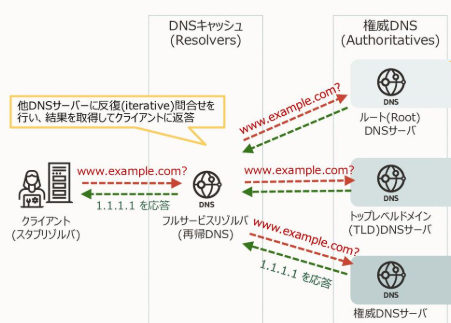
OCI-DNS/DNSの仕組み
DNSリゾルバ
- Internet and VCN Resolver：
- デフォルト設定であり、下記2つの目的で使用する。
- (1)インターネット・リゾルバ
- インターネットに一般公開されているwww.oracle.comなどの名前解決
- (2)VCNリゾルバ
- 同じVCNで稼働するインスタンスの名前解決（VCN Resolver）
- Custom Resolver：
- 以下のように特定のDNSサーバーを参照するときに使用する。
- インターネットで提供されている特定のDNSサーバー
- Oracle Cloud Infrastructure内に自分で立てたDNSサーバー
- VPNやFastConnectで接続しているオンプレミス・ネットワークにあるDNSサーバー
- VCNのDNSの選択肢
プライベートDNSリゾルバ
リゾルバ・エンドポイント
リゾルバ・ルール
OCI-DNS/DNSSEC
分類05:OCIネットワーク・ソリューションとアプリケーション・サービスの計画・設計
DNSSEC
KSK（Key Signing
Key、鍵署名鍵）
Oracle Container
Engine for Kubernetes(OKE)
分類05:OCIネットワーク・ソリューションとアプリケーション・サービスの計画・設計
OKE/概要
OKE/CoreDNS
Kubernetes
Engineによって作成されるクラスタには、自動的に起動される組込みKubernetesサービスとしてDNSサーバーが含まれます。
各ワーカー・ノードのkubeletプロセスは、個々のコンテナをDNSサーバーに向け、DNS名をIPアドレスに変換します。
OKE/OCIネイティブ・イングレス・コントローラ
OCIネイティブ・イングレス・コントローラとは、OCI固有のKubernetes/ingress
Controllersのことです。
オンプレミス環境
分類06:ハイブリッド・ネットワーク・アーキテクチャの設計
CPE(Customer Premises
Equipment)
CPEとは、Customer Premises
Equipmentの略で顧客構内機器のことを表します。
オンプレミス側に設置しているルータのことを指します。
動的ルーティングゲートウェイ(DRG)
分類06:ハイブリッド・ネットワーク・アーキテクチャの設計
DRG/概要
DRG/構成要素
DRG/設定手順
DRG/アタッチメント
- アタッチメントの種別
- VCN attachments(VCN)
- VCNに接続するアタッチメント。DRG.各VCNは、DRGと同じテナンシにすることも、異なるテナンシにすることもできます(適切なポリシーが設定されている場合)。VCNは1つのDRGにしかアタッチできません。
- VIRTUAL_CIRCUITアタッチメント(VIRTUAL_CIRCUIT)
- DRGに1つ以上のFastConnect仮想回線をアタッチして、オンプレミス・ネットワークに接続できます。
- RPCアタッチメント(REMOTE_PEERING_CONNECTION)
- リモート・ピアリング接続を使用して、DRGを他のDRGとピアリングできます。他のDRGは、他のリージョンまたはテナンシ、または同じリージョンに配置できます。
- IPSEC_TUNNELアタッチメント(IPSEC_TUNNEL)
- サイト間VPNを使用して、2つ以上のIPSecトンネルをDRGにアタッチして、オンプレミス・ネットワークに接続できます。これは、テナンシ間でも許可されます。
- LOOPBACKアタッチメント(LOOPBACK)
- サイト間VPNを使用して、FastConnect仮想回線を暗号化できます。
- DRGおよびDRGアタッチメントの作業
- ループバック・アタッチメント
DRGルート表(DRGルーティング)
DRGルーティング処理内容
「DRGルート表」と「DRGにアタッチメントされるVCNルート表」の関係は以下となります。
- DRGルート表の管理パケット
- DRG←VCNに転送されるパケット(アウトバウンドパケット)のルーティング定義
- VCNルート表の管理パケット
- DRG→VCNに転送されるパケット(インバウンドパケット)のルーティング定義
- DRGルーティング操作
- DRGルート表
設定例は以下の通りです。
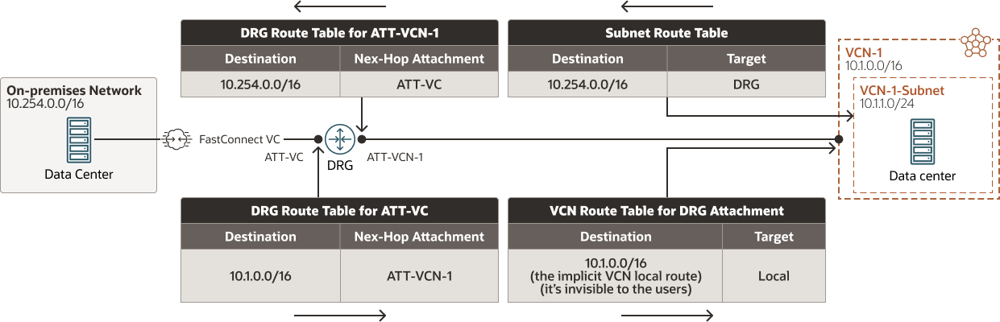
OCI-ECMP
DRGはECMP機能をサポートしている。
ルート競合
同じCIDRを持つ2つのルートが同じDRGルート表で確認された場合、DRGは次の基準を使用して競合を解決します。
- 競合解決の基準
- 静的ルートは、常に動的ルートよりも優先されます
- 動的ルート間の競合は、最初にルートのASパスを分析することによって解決されます
- それ以外の場合、ルートをインポートしたアタッチメント・タイプは、そのアタッチメント・タイプに基づいて次の優先度に従って評価されます
- 競合するルートが同じタイプのアタッチメントからインポートされた場合、競合は、アタッチメント・タイプに応じて異なる方法で解決されます
- ルート競合
動的ルーティングゲートウェイ(DRG)/BGPに関する設定
分類06:ハイブリッド・ネットワーク・アーキテクチャの設計
パス優先
BGPのAS_PATH属性を使用して、単一のDRGルート表のコンテキストでルート選択が可能となります。
AS番号(ASN)
OCIのAS番号は、リージョン関係なく同一の”31898”となる。
動的ルーティングゲートウェイ(DRG)/広域経路に関する制御(経路制御)
分類06:ハイブリッド・ネットワーク・アーキテクチャの設計
DRG/ルート・ディストリビューション
動的ルーティングの経路制御で使用する。
ルート・ディストリビューションは、ルートがDRGアタッチメントからどのようにインポートされるか、またはDRGアタッチメントにどのようにエクスポートされるかを指定します。
ルート・ディストリビューションは、マッチ基準（OCIDやアタッチメント・タイプなど）とアクションを含むステートメントとして定義します。
ルート・フィルタリング
ルート・フィルタリングを使用すると、オンプレミス・ネットワークへのBGPアドバタイズメントに含めるルートを決定できます。
- FastConnect上のパブリック仮想回路
- FastConnect上のパブリック仮想回路は、共有ルートの範囲を定義する選択したルート・フィルタリング設定に従ってルートを通知します
- プライベート仮想回線およびサイト間VPN
- ルート・フィルタリング
ルート・フィルタリング/FastConnectでのルート・フィルタリング・オプション
FastConnect仮想回路を設定するときに、ルート・フィルタリング・オプションを選択できます。
詳細は、FastConnectパートナ、サードパーティ・プロバイダまたはコロケーションのどれを使用しているかによって異なります。
- リージョナル
- この仮想回線のリージョンのエフェメラルIPアドレス範囲、予約済IPアドレス範囲およびOracle
Services
Networkで使用される使用可能なパブリック・ルートのみをオンプレミス・ネットワークに通知します。
- マーケット
- この仮想回線のリージョンのエフェメラルIPアドレス範囲、予約済IPアドレス範囲およびOSNによって使用される使用可能なパブリック・ルートを通知し、世界の同じ部分にある他のリージョンをオンプレミス・ネットワークにルーティングします。これはデフォルト設定です。4つの各マーケットで使用可能なリージョンは、FastConnectパブリック・ピアリングの通知ルートの記事の表およびマップに示されています。
- グローバル
- Oracleクラウドのすべての市場のすべてのリージョンについて、一時的IPアドレス範囲、予約済IPアドレス範囲およびOSNによって使用される使用可能なパブリック・ルートをオンプレミス・ネットワークに通知します。
- Oracle Services Network
- ローカル・リージョンのOSNリソースによって使用されるパブリック・ルートのみをオンプレミス・ネットワークに通知します。
リモートピアリング接続(RPC)
分類06:ハイブリッド・ネットワーク・アーキテクチャの設計
リモートピアリング接続（RPC）
リージョンのVPCと接続を可能とするRPCです。
異なるリージョンにあるDRG通しで接続することができます。
リモートピアリング接続のIAM設定
FastConnect/概要
分類06:ハイブリッド・ネットワーク・アーキテクチャの設計
FastConnect/概要
FastConnect/接続方式
FastConnect/FastConnectの一般的なネットワーク構成(サードパーティプロバイダー接続又はOracleパートナ)
サードパーティプロバイダー接続又はOracleパートナ時のFastConnectの一般的なネットワーク構成は以下のとおりです。
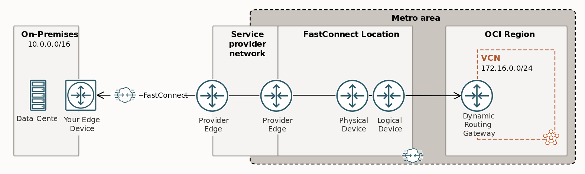
IPSec利用時のループバック・アタッチメント
FastConnectでIPSecを利用する場合には、「ループバック・アタッチメント」の設定が必要。
ループバック・アタッチメントでは、トンネルのプライベートIPアドレスのOracle側をDRGに提供することで、暗号化されたトラフィックが仮想回線アタッチメントとIPSecトンネル・アタッチメントの間を移動できます。ループバック・アタッチメントがない場合、仮想回線アタッチメントとIPSecトンネル・アタッチメントの間のトラフィックは直接許可されません
FastConnect/BFD(Bidirectional
Forwarding Detection)
FastConnectは、BFD(Bidirectional Forwarding
Detection)の機能をサポートしている。
FastConnect/他のクラウド・プロバイダとの接続
分類06:ハイブリッド・ネットワーク・アーキテクチャの設計
サードパーティ・プロバイダの使用(他のクラウド・プロバイダとの接続)
FastConnect/サードパーティ・プロバイダ設定手順
- FastConnect/サードパーティ・プロバイダ設定手順
- DRGの設定(プライベート・ピアリングのみ)
- クロスコネクト・グループまたはクロスコネクションの設定
- サードパーティ・プロバイダへのLOOの転送
- 光源レベルの確認
- 各相互接続のアクティブ化
- インタフェースが稼働していることの確認
- 仮想回線の設定
- エッジの構成
- Oracle BGP IPアドレスのPing
- BGPセッションが確立されていることの確認
- 接続のテスト
- FastConnectの開始
FastConnect
Oracleパートナの使用
Oracle
Cloud コロケーション接続(FastConnect Colocation)
Colocation接続モデルは、お客様が Oracle FastConnect
ロケーション(Equinix, NTT
Data等)に設備を確保している場合、または確立しようとしている場合に適しています。
Oracle
FastConnectを使用して、コロケーション施設内のネットワーク機器(Edge)から、Oracle
Cloud Servicesへの接続を確立できます。
オラクルは、FastConnect
エッジ・デバイスへの直接クロスコネクトを確立するためにデータ・センター・プロバイダが必要とする承認書（LOA）をお客様に提供します。
FastConnect/パブリック・ピアリング
分類06:ハイブリッド・ネットワーク・アーキテクチャの設計
FastConnect/パブリック・ピアリング
FastConnectを使用する方法の一つ。パブリック・ピアリングを使用すると、オンプレミス・ネットワークはインターネットを使用せずに、OCIのパブリック・サービス
(たとえば、Object
Storage、Console、API、またはVCNのパブリック・ロード・バランサなど)にアクセスできます。
パブリック・ピアリングのBCPアドバタイズ
OCI FastConnectパブリック・ピアリングは、インターネットをバイパスして
Oracle Services Network およびすべての OCI
パブリック・リソースに到達できます。
BCP 経由ですべての OCI パブリック CIDR
に向けてアドバタイズします。
(Oracle Services Networkエッジルータに直接接続ができる)
サイト間IPSecVPN(Site-to-Site
VPN)
分類06:ハイブリッド・ネットワーク・アーキテクチャの設計
サイト間IPSecVPN/概要
サイト間IPSecVPN/VPNルーティング
CPEサイト側のBGP機能を利用して、VPNルーティングの設定を行います。
以下はその設定手順を記載します。
- VPNルーティング推奨要件
- VPN作成時に、2つの冗長IPsecトンネルを作成し、IPsrcのトンネル毎にCPEを構成する(IPアドレスもそれぞれに割り振る)ことが推奨されている。
- VPNルーティング方式(1トンネルごとにルーティングを選択)
- 静的ルーティング
- BGPによる動的ルーティング
- CIDR範囲を指定したポリシーベースルーティング
- VPNルーティングの注意点
- BGPを明示的に構成しない場合は、静的ルーティングがデフォルトになる
- 静的ルーティングは、最低1から最大10のスタティックルートを設定する
- BGPを選択する場合には、ASNと2つのIPアドレスが必要
- OCI技術資料
: 外部接続 VPN接続 詳細/8ページ
IPSec over
FastConnect(FastConnect経由のIPSec)/概要
IPSec
over FastConnect(FastConnect経由のIPSec)/ネットワーク構成
IPSec over
FastConnectの一般的なネットワーク構成は以下のとおりです。
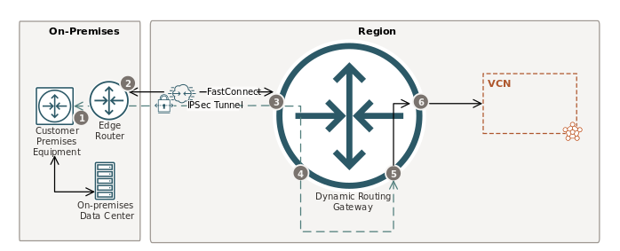
FastConnect/他社ベンダー製品
分類06:ハイブリッド・ネットワーク・アーキテクチャの設計
他社ベンダー製品
- Google/Partner Cross-Cloud Interconnect
- Azule/ExpressRoute
Oracle Interconnect for
Azure
Microsoft AzureとOracle Cloud
Infrastructure（OCI）の機能を、データ転送料金のかからない、低レイテンシ・プライベート接続により組み合わせることで、アプリケーションの移行と最新化を加速します。
転送ルーティング
分類07:転送ルーティング
転送ルーティング
転送ルーティングとは、オンプレミス・ネットワークが仲介を使用してOracleリソースまたはサービスまたはVCNsに到達するネットワーク・トポロジのことです。
仲介者は、VCN、またはオンプレミス・ネットワークがすでにアタッチされているDynamic
Routing Gateway (DRG)となります。
転送ルーティング構成で利用可能なOCIゲートウェイ
- 利用可能なOCIゲートウェイ
- サービスゲートウェイ
- 動的ルーティング・ゲートウェイ
- ローカル・ピアリング・ゲートウェイ
インターネット・ゲートウェイとNATゲートウェイは、それらが含まれるVCN内のリソースだけが利用できます。
例えば、DRG経由のトラフィックをインターネット・ゲートウェイに転送して外部に送信することはできません。
DRGアタッチメントに関連付けられたVCNルート表
転送ルーティングで、DRGアタッチメントに関連付けられたVCNルート表は、以下3つのリソースをターゲットにするルールを設定できます。
- VCNルート表のターゲットとして関連付けできる3つのリソース
- プライベートIP
- ローカル・ピアリング・ゲートウェイ
- サービス・ゲートウェイ
サードパーティプロバイダー接続の注意点
サードパーティ・アプライアンス（TPA）ソフトウェアは、コンピュート・インスタンス上に構成されます。
そのTPAへルーティングする場合には、プライベートIPへのルーティングを指定して、そのコンピュート・インスタンスのVNICに送信します。
Oracleサービスへのプライベート・アクセス
サービス・ゲートウェイを介して、Oracleサービスに接続することが可能です。
以下は、「ゲートウェイを介して直接の転送ルーティング」するNW構成となります。
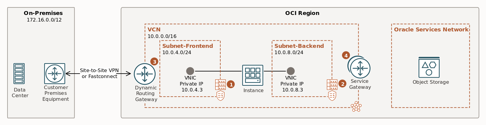
(DRGアタッチメントのVCNルート表)
| 宛先CIDR |
ルート・ターゲット |
| リージョン内のすべてのOSNサービス |
サービス・ゲートウェイ |
(サービス・ゲートウェイのVCNルート表)
| 宛先CIDR |
ルート・ターゲット |
| 172.16.0.0/12 |
DRG |
ハブ・スポーク構成
分類07:転送ルーティング
ハブ・スポーク構成/設定
DRGアタッチメントにVCNルート表を関連付ける。
ハブ・スポーク構成/設定・処理内容
「ハブ・スポーク構成」の構成例は以下の通りです。
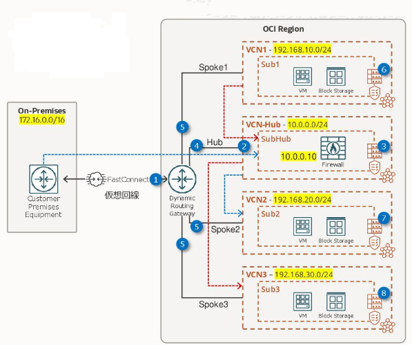
ハブ・スポーク構成/DNS設定
ハブ・スポーク構成/Active
Directory統合
Active
Directory統合する場合には、次のオプションを実装する必要があります。
- DNS
- サブドメインやSRVフォルダ(_msdscなど)を含め、すべてのADドメインを転送する必要があります。
場合によっては、さらにカスタム・ドメインが存在することがあります(たとえば、内部ドメインがパブリック・ドメインと衝突する場合)。
すべてのルールのリストをエクスポートし、OCI上のルールとAD
DNSへのリダイレクトを照合することをお薦めします。
ルーティングとDNS転送はVCN全体であり、ドメイン結合に依存しません。
- ハイブリッド・クラウドでのActive
Directory統合の拡張
セキュリティ一般
分類08:セキュアなOCIネットワークと接続ソリューションの実装と運用
OCIセキュリティ/オラクル社情報
OCIセキュリティ/一般情報
クロス・テナンシ(テナンシ間接続)
分類08:セキュアなOCIネットワークと接続ソリューションの実装と運用
クロス・テナンシ/概要
クロス・テナンシ/IAMポリシー
クロス・テナンシ/IAMポリシー設定コマンド
Define tenancy Requestor as <requestor-group-ocid>
Define group RequestorGrp as <requestor-group-ocid>
Admit group RequestorGrp of tenancy Requestor to manage remote-peering-to in compartment <acceptor-compartment-name>
ゼロトラスト・セキュリティ
分類08:セキュアなOCIネットワークと接続ソリューションの実装と運用
ゼロトラスト・セキュリティ/概要
OCI環境におけるゼロトラスト・セキュリティに関する機能をついて以下説明します。
OCI Zero Trust Packet
Routing(ZPR)/概要
Oracle Cloud Infrastructure Zero Trust Packet Routing
(ZPR)は、セキュリティ属性を割り当てたOCIリソース用に記述したインテントベースのセキュリティ・ポリシーを通じて、機密データを不正なアクセスから保護します。
OCIリソースの識別と編成に使用するラベルにより、セキュリティ属性を定義することができます。
ZPRは、ネットワークアーキテクチャーの変更や構成の誤りに関係なく、アクセスが要求されるたびにネットワークレベルでポリシーを適用します。
OCI
Zero Trust Packet Routing(ZPR)/OCI Zero Trust Packet Routing(ZPR)
OCI Zero Trust Packet
Routing(ZPR)/個別設定
- セキュリティ属性ネームスペース
- ZPRポリシー
- リソースの管理
OCI Zero Trust
Packet Routing(ZPR)/ZPRポリシー設定
OCI-Bastion(OCI要塞)
分類08:セキュアなOCIネットワークと接続ソリューションの実装と運用
OCI-Bastion/概要
Bastionのセッション・タイプ
OCI Network
Firewall(ネットワーク・ファイアウォール)
分類08:セキュアなOCIネットワークと接続ソリューションの実装と運用
OCI Network Firewall/概要
ファイアウォール・ポリシー
ファイアウォール・ポリシーは、以下のルールと基準があります。
- ファイアウォール・ポリシー・ルール
- トラフィックを復号化する復号化ルール
- トラフィックを許可またはブロックするセキュリティ・ルール
- トラフィックを検査するトンネル検査ルール
- 基準
- 暗号化ルールは、常にセキュリティ・ルールの前に適用されます。
- 暗号化ルールおよびセキュリティ・ルールは、ユーザーが定義できる優先順位を使用して適用されます。
- ファイアウォール・ポリシー・ルールについて
OCI Network Firewall/ログ解析
OCI-WAF
分類08:セキュアなOCIネットワークと接続ソリューションの実装と運用
OCI-WAF/概要
OCI WAF(Web Application
Firewall)は、コンソール上で様々なルールを適用し、悪意のあるインターネット・トラフィックからのリクエストを除外することで
Web アプリケーションを保護できるセキュリティ・サービスである。
OCI-WAF/WAFポリシー種別
OCI-WAF/4つの主な機能
OCI WAF（Web Application
Firewall）の4つの主な機能は、保護ルール、脅威インテリジェンス、アクセス制御、ボット管理です。
- 保護ルール
- OCI
WAFは、Webアプリケーションへの悪意のあるトラフィックを検知し、ブロックするために、事前に定義された豊富な保護ルールを提供します。
- OWASPトップ10への対応:
クロスサイトスクリプティング（XSS）やSQLインジェクションといった、OWASP（Open
Worldwide Application Security
Project）が定める上位の脅威からアプリケーションを保護します。
- カスタマイズ:
既存のルールをカスタマイズしたり、特定のアプリケーションのニーズに合わせて独自のカスタム保護ルールを作成したりできます。
- チューニング:
保護ルールは、Webトラフィックをチェックし、ルール条件に一致した場合に実行するアクション（ブロック、検知、無効化など）を決定します。運用状況に応じて、ルールの最適化が可能です。
- 脅威インテリジェンス
- OCI
WAFは、脅威インテリジェンスフィードを統合し、既知の悪意のあるIPアドレスや不正なペイロードを認識・ブロックします。
- 継続的な更新:
悪意のあるIPアドレスのソースを、日々更新される複数の脅威インテリジェンスプロバイダーから受け取ります。
- 自動防御:
ボットネット、DDoS攻撃、フィッシングサイト、マルウェア感染IPなどの脅威情報に基づいて、アクセスを自動的に制限します。
- 連携:
OCIの脅威インテリジェンスサービスから提供される最新の脅威情報を活用し、WAFのアクセス制御ルールを構成することで、防御体制を強化できます。
- アクセス制御
- 特定の条件に基づいて、Webアプリケーションへのトラフィックを許可、ブロック、またはチャレンジ（CAPTCHAなど）するルールを設定できます。
- 条件ベースの制御:
IPアドレス、地理的位置情報、URL、HTTPヘッダー、リファラーなどの属性に基づいてアクセスを管理します。
- ブラックリスト/ホワイトリスト:
信頼できるIPアドレスをホワイトリストに登録したり、疑わしいIPアドレスをブラックリストに登録したりすることが可能です。
- ボット管理
- 悪意のあるボットトラフィックを識別、分類、管理することで、ボットによる不正行為からWebアプリケーションを保護します。
- 識別と分類:
人間からのリクエストと機械（ボット）からのリクエストを識別し、疑わしい非人間的なリクエストをブロックします。
- 不正なボットの緩和:
悪意のあるボットをブロックまたはチャレンジすることで、Webスクレイピング、資格情報の不正利用、DDoS攻撃などを防ぎます。
- ホワイトリスト:
検索エンジンのクローラーなど、必要なボットのアクセスを許可するように設定できます。
OCI-WAF/構成要素(WAF概念)
- Webアプリケーション・ファイアウォール(WAF)
- WAFは、悪意のある好ましくないインターネット・トラフィックからアプリケーションを保護する、Payment
Card Industry
(PCI)に準拠したグローバル・セキュリティ・サービスです。
- アクセス制御
- アクセス制御には、「リクエスト制御」および「レスポンス制御」が含まれます。
- リクエスト制御
- リクエスト制御により、HTTPリクエスト・プロパティの検査および定義されたHTTPレスポンスの返却が可能になります。
- リクエスト保護ルール
- リクエスト保護ルールを使用すると、HTTPリクエストに悪意のあるコンテンツがあるかどうかをチェックし、定義されたHTTPレスポンスを返すことができます。
- レスポンス制御
- レスポンス制御により、HTTPリクエスト・プロパティの検査および定義されたHTTPレスポンスの返却が可能になります。
- アクション
- アクションは、次のいずれかを表すオブジェクトです:
- 許可:
ルールが一致したときに、現在のモジュール内の残りのすべてのルールをスキップするアクション。
- チェック:
現在のモジュールでのルールの実行を停止しないアクション。かわりに、ルール実行の結果をドキュメント化したログ・メッセージを生成します。
- 返却HTTPレスポンス: 定義されたHTTPレスポンスを返すアクション。
- 条件
- 各ルールは、条件としてJMESPath式を受け入れます。HTTPリクエストまたはHTTPレスポンス(ルールのタイプに応じて)は、WAFルールをトリガーします。
- ファイアウォール・リソース
- ファイアウォール・リソースは、WAFポリシーとロード・バランサなどの強制ポイント間の論理リンクです。
- ネットワーク・アドレス・リスト
- ネットワーク・アドレス・リストとは、個別のパブリックIPアドレスおよびCIDR
IP範囲、またはWAFポリシーで使用されるプライベートIPアドレスの集合です。
- オリジン
- Webアプリケーションのオリジン・ホスト・サーバー。
- 保護ルール
- 保護ルールは、トラフィックをログに記録するか、許可するか、ブロックするかを決定するために使用される保護機能のセットです。WAFは、Webアプリケーションへのトラフィックを監視します。使用可能なWAFルールのリストを表示するには、保護機能を参照してください。
- レート制限
- レート制限により、HTTP接続プロパティの検査が可能になり、特定のキーのリクエストの頻度が制限されます。
- WAFの概念
- Oracle
Web Application Firewall（WAF）とは
OCI-WAF/ネットワーク・アドレス・リスト
ネットワーク・アドレス・リストとは、個別のパブリックIPアドレスおよびCIDR
IP範囲、またはWAFポリシーで使用されるプライベートIPアドレスを定義したものです。
OCI-WAF/WAFポリシー設定
WAF（Web Application
Firewall）ポリシーとは、Webアプリケーションへの悪意のある通信を検知・遮断するための、一連のルール（シグネチャ）や設定の集まりです。具体的には、SQLインジェクションやクロスサイト・スクリプティングといったサイバー攻撃を防ぐため、HTTP/HTTPSトラフィックを検査・分析し、特定の条件に一致した通信に対して、ブロック、ログ記録、警告などのアクションを定義します。
OCI-WAF/WAFポリシー設定(ユースケース1)
OCI-WAF/WAFポリシー設定(ユースケース2)
- IPアドレスをカテゴリごとに分類
- IPアドレスのカテゴリごとに「ネットワークアドレスリスト」を作成
- 「ネットワークアドレスリスト」を「WAFポリシー」上に定義する
- ユーザエージェントまたはHTTPメソッド条件ごとに「アクセス制御(アクセス制御ルール)」を作成(設定)する
- 「アクセス制御ルール」ごとに、「ALLOW」または「REDIRECT」の「アクション」を設定する
OCI-WAF/WAF保護ルール
OCI-WAF/エッジ・ポリシー
分類08:セキュアなOCIネットワークと接続ソリューションの実装と運用
エッジ・ポリシー/概要
エッジ・ポリシー/設定手順
ボット管理
- ボット管理
- エッジ・ポリシー/JavaScriptチャレンジ
- エッジ・ポリシー/ヒューマン・インタラクション・チャレンジ
- エッジ・ポリシー/デバイス・フィンガープリント・チャレンジ
- エッジ・ポリシー/CAPTCHAチャレンジ
- エッジ・ポリシー/良好なボット許可リスト管理
- エッジ・ポリシー/アドレス・レート制限
- ボット管理
CAPTCHAチャレンジ
特定のURLに人間のみがアクセスできるようにする必要がある場合は、CAPTCHA保護でそれを制御できます。
OCI証明書サービス(Oracle
Cloud Infrastructure Certificates)
分類08:セキュアなOCIネットワークと接続ソリューションの実装と運用
OCI証明書サービス/概要
OCI証明書サービス/発行方法
OCI証明書サービス/設定手順
ワークロード移設(OCI移設)
分類09:OCIへのワークロードの移行
ワークロード移設(OCI移設)
トラブルシューティング手法
分類10:OCIネットワーク、接続性、トラブルシューティング・ツール
トラブルシューティング手法/概要
VCNフローログ
分類10:OCIネットワーク、接続性、トラブルシューティング・ツール
VCNフローログ/概要
VCNフロー・ログは、VCNを通過するトラフィックの詳細を表示します。
トラフィックの監査やセキュリティ問題のトラブルシューティングに役立ちます。
VCNフロー・ログの有効化ポイント
VCNフロー・ログの有効化ポイントは以下の4つ：
ネットワーク関連ツール
分類10:OCIネットワーク、接続性、トラブルシューティング・ツール
ネットワーク・パス・アナライザ(NPA)
ネットワーク・パス・アナライザ(NPA) は、
接続性に影響を与える仮想ネットワーク構成の問題を特定するための統一された直感的な機能を提供します。
NPA はネッ トワーク構成を収集・分析し、
送信元と宛先間のパスがどのように機能するか、
または機能しないかを判断します。実際のトラフィックは送信されません。その代わり、
構成が調査され、 到達可能性の確認に使用されます。
ネットワーク・ビジュアライザー
OCIネットワーク・ビジュアライザは、サブネット、インスタンス、およびそれらの相互接続を含むVCNを視覚的に表示するツールで、ネットワーク・トポロジー(ネットワーク全体つながり)の理解と管理に役立ちます。
connection-diagnostics
仮想テスト・アクセス・ポイント(VTAP)
分類10:OCIネットワーク、接続性、トラブルシューティング・ツール
VTAP/概要
仮想テスト・アクセス・ポイント(VTAP)は、選択したソースから選択したターゲットにトラフィックをミラー化して、トラブルシューティング、セキュリティ分析およびデータ・モニタリングを行うツールとなります。
VTAP/構成要素
各VTAPは作成時には、以下の項目を設定する必要があります。
VTAP/ネットワーク構成
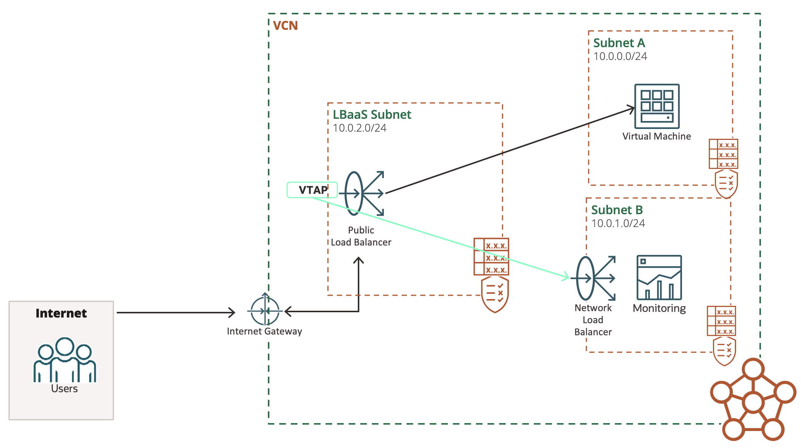
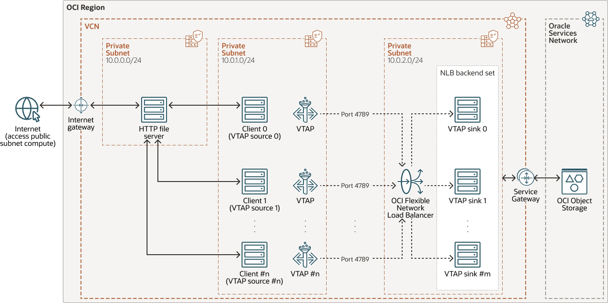
ベストプラクティス
分類11:OCIネットワークのベスト・プラクティス
概要
他社製品仕様
分類98:他社クラウド製品仕様
サードパーティ製仮想アプライアンス
IPプレフィックス(IP予約)
ネットワーク一般技術/NW仕様
分類99:ネットワーク一般技術
参考情報
イングレス・エグレス
ネットワーク一般技術/IPv6
分類99:ネットワーク一般技術
IPv6/概要
IPv6/3つのスコープ
SLAAC(Stateless
Address Autoconfiguration)
SLAACとは、ルータから配布されるIPv6のプレフィックスやDNSサーバのIPアドレスをもとに端末側でIPv6アドレスを自動設定するプロトコルです。
サブネットの割り当て数
- 各サブネットは/64プレフィックスを持つ（IPv6で一般的に用いられる構成）
- プロバイダーから/56プレフィックスが割り当てられる
→ 256個（2^8）のサブネットが利用できる。
ネットワーク一般技術
分類99:ネットワーク一般技術
参考ページ(サイト内)
- VLAN
- L2sec
- IPsec-VPN
- BGP
- DNS
- DNSSEC
- LB
ネットワーク一般技術/設計思想
分類99:ネットワーク一般技術
ゼロトラスト
Kubernetes一般技術
分類99:ネットワーク一般技術
Kubernetes/概要
Kubernetes/Ingress
Controllers